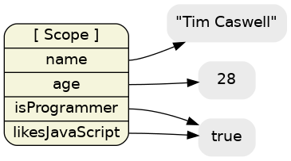

Learning Javascript with Object Graphs
HEADS UP! This article was written for an older version of node. More up-to-date information may be available elsewhere.
One of the secrets to being a super effective JavaScript developer is to truly understand the semantics of the language. This article will explain the basic elemental parts of JavaScript using easy to follow diagrams.
References Everywhere
A variable in JavaScript is simply a label that references a value in memory somewhere. These values can be primitives like strings, numbers, and booleans. They can also be objects or functions.
Local Variables
In the following example, we will create four local variables in the top-level scope and point them to some primitive values:
// Let's create some local variables in the top scope
var name = "Tim Caswell";
var age = 28;
var isProgrammer = true;
var likesJavaScript = true;
// Test to see if the two variables reference the same value
isProgrammer === likesJavaScript;
Notice that the two boolean variables point to the same value in memory. This is because primitives are immutable and so the VM can optimize and share a single instance for all references to that particular value.
In the code snippet we checked to see if the two references pointed to the same value using === and the result was true.
The outer box represents the outermost closure scope. These variables are top-level local variables, not to be confused with properties of the global/window object.
Objects and Prototype Chains
Objects are just collections of more references to new objects and prototypes. The only special thing they add is the prototype chain for when you try to access a property that's not in the local object, but is in a parent object.
// Create a parent object
var tim = {
name: "Tim Caswell",
age: 28,
isProgrammer: true,
likesJavaScript: true
}
// Create a child object
var jack = Object.create(tim);
// Override some properties locally
jack.name = "Jack Caswell";
jack.age = 4;
// Look up stuff through the prototype chain
jack.likesJavaScript;Here we have one object with four properties referenced by the tim variable. Also we created a new object that inherits from the first object and referenced it from jack. Then we overrode two properties in the local object.
Now when looking up jack.likesJavaScript, we first find the object that jack references. Then we look for the likesJavaScript property. Since it's not there, we look at the parent object and find it there. Then we find the true value it references.
The Global Object
Ever wondered why tools like jslint always tell you to not forget to put var statements before your variables. Well, here is what happens if you forget.
var name = "Tim Caswell";
var age = 28;
var isProgrammer = true;
// Oops we forgot a var
likesJavaScript = true;Notice that likesJavaScript is now a property of the global object instead of a free variable in the outer closure. This only really matters if you're going to be mixing several scripts. But in any real program that's exactly what you're going to be doing.
Always remember to put those var statements in there to keep your variable's scope to the current closure and its children. You'll be much happier by following this simple rule.
If you must put something on the global object, do it explicitly with window.woo in the browser or global.goo in node.js.
Functions and Closures
JavaScript isn't just a series of chained data structures. It contains executable, callable code known as functions. These functions create chained scopes and closures.
Visualizing Closures
Functions can be drawn as special objects that contain executable code as well as properties. Every function has a special [scope] property that represents the environment it was in when it was defined. If a function is returned from another function then this reference to the old environment is closed over by the new function in a "closure".
In this example we will create a simple factory method that generates a closure and returns a function.
function makeClosure(name) {
return function () {
return name;
};
}
var description1 = makeClosure("Cloe the Closure");
var description2 = makeClosure("Albert the Awesome");
console.log(description1());
console.log(description2());When we call description1(), the VM looks up the function that it references and executes it. Since that function looks for a local variable named name, it finds it in the closure scope. This factory method is nice since each generated function has its own space for local variables.
See the article why use closure for more in-depth reading on this topic and its many uses.
Shared Functions and this
Sometimes for performance reasons, or because you just plain prefer the style, JavaScript provides a this keyword that allows you to reuse a function object in different scopes depending on how it was called.
Here we'll create a few objects that all share a common function. This function will reference this internally to show how it changes from call to call.
var Lane = {
name: "Lane the Lambda",
description: function () {
return this.name;
}
};
var description = Lane.description;
var Fred = {
description: Lane.description,
name: "Fred the Functor"
};
// Call the function from four different scopes
console.log(Lane.description());
console.log(Fred.description());
console.log(description());
console.log(description.call({
name: "Zed the Zetabyte"
}));
In the diagram, we see that even though Fred.description was set to Lane.description, it's really only referencing the function. Thus all three references have equal ownership of the anonymous function. This is why I try to not call functions on constructor prototypes "methods", because that implies some sort of binding of the function to the constructor and its "class". (see what is this for more details on the dynamic nature of this)
Conclusion
I've had tons of fun using diagrams to visualize these data structures. My hope is that this helps those of us that are visual learners to get a better grasp of JavaScript semantics. I have past experience as both a front-end designer/developer and as a server-side architect. I hope my unique perspective is useful to those coming from the world of design and learning the innards of this wonderful language known as JavaScript.
(NOTE, all the diagrams are graphviz dot files and can be seen here)
View the discussion thread.blog comments powered byDisqus